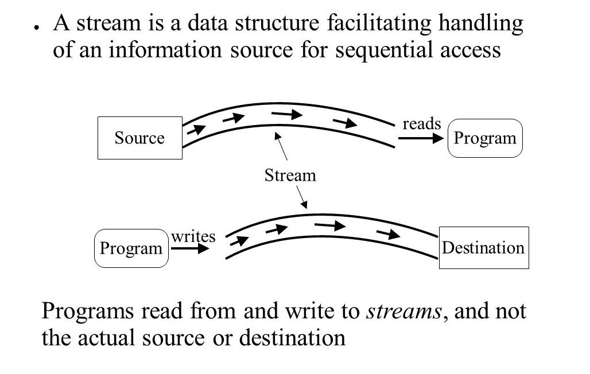

IO Streams in Java
Java I/O is used to process the input and produce the output.
Java uses the concept of the stream to make I/O operation fast. The java.io package contains all the classes required for input and output operations.
A Stream is linked to a physical layer by java I/O system to make input and output operation in java. In general, a stream means the continuous flow of data. Streams are a clean way to deal with input/output without having every part of your code understand the physical.
Java defines two types of streams. They are,
1. Byte Stream: It provides a convenient means for handling input and output of byte.
2.Character Stream: It provides a convenient means for handling input and output of characters. Character stream uses Unicode and therefore can be internationalized. 
Byte Stream Classes:
Byte stream is defined by using two abstract class at the top of hierarchy, they are InputStream and OutputStream.
Character Stream Classes
Character stream is also defined by using two abstract class at the top of hierarchy, they are Reader and Writer.
Reading Characters
read() method is used with BufferedReader object to read characters. As this function returns integer type value has we need to use typecasting to convert it into char type.
int read() throws IOException
Below is a simple example explaining character input.
class CharReadDemo
{
public static void main( String args[])
{
BufferedReader br = new Bufferedreader(new InputstreamReader(System.in));
char c = (char)br.read(); //Reading character
}
}
Reading Strings
To read string we have to use readLine() function with BufferedReader class's object.
String readLine() throws IOException
Program to take String input from Keyboard in Java
import java.io.*;
class MyInputDemo
{
public static void main(String[] args)
{
String text;
InputStreamReader isr = new InputStreamReader(System.in);
BufferedReader br = new BufferedReader(isr);
text = br.readLine(); //Reading String
System.out.println(text);
}
}
How to create a file in Java
The File.createNewFile() method is used to create a file in Java, and return a boolean value : true if the file is created successful; false if the file is already exists or the operation failed.
import java.io.File;
import java.io.IOException;
public class CreateFileExample
{
public static void main( String[] args )
{
try {
File file = new File("CharDemo.java");
if (file.createNewFile()){
System.out.println("File is created!");
}else{
System.out.println("File already exists.");
}
} catch (IOException e) {
e.printStackTrace();
}
}
}
How to read file in Java-BufferedInputStream
import java.io.*;
public class ReadFileDemo
{
public static void main(String[] args)
{
//Specify the path of the file here
File file = new File("C://ReadDemo.java");
BufferedInputStream bis = null;
FileInputStream fis= null;
try
{
//FileInputStream to read the file
fis = new FileInputStream(file);
/*Passed the FileInputStream to BufferedInputStream
*For Fast read using the buffer array.*/
bis = new BufferedInputStream(fis);
while( bis.available() > 0 ){
System.out.print((char)bis.read());
}
}catch(FileNotFoundException fn)
{
System.out.println("The specified file not found" + fn);
}
catch(IOException io)
{
System.out.println("I/O Exception: " + io);
}
finally
{
try{
if(bis != null && fis!=null)
{
fis.close();
bis.close();
}
}catch(IOException io)
{
System.out.println("Error in InputStream close(): " + io);
}
}
}
Append content to File using FileWriter and BufferedWriter
import java.io.File;
import java.io.FileWriter;
import java.io.BufferedWriter;
import java.io.IOException;
class AppendFileDemo
{
public static void main( String[] args )
{
try{
String content = "This is my content which would be appended " +
"at the end of the specified file";
//Specify the file name and path here
File file =new File("ReadDemo.java");
/* This logic is to create the file if the
* file is not already present
*/
if(!file.exists()){
file.createNewFile();
}
//Here true is to append the content to file
FileWriter fw = new FileWriter(file,true);
//BufferedWriter writer give better performance
BufferedWriter bw = new BufferedWriter(fw);
bw.write(content);
//Closing BufferedWriter Stream
bw.close();
System.out.println("Data successfully appended at the end of file");
}catch(IOException ioe){
System.out.println("Exception occurred:");
ioe.printStackTrace();
}
}
}
Append content to File using PrintWriter
PrintWriter gives you more flexibility. Using this you can easily format the content which is to be appended to the File.
import java.io.File;
import java.io.FileWriter;
import java.io.PrintWriter;
import java.io.BufferedWriter;
import java.io.IOException;
class FileDemo
{
public static void main( String[] args )
{
try{
File file =new File("ReadDemo.java");
if(!file.exists()){
file.createNewFile();
}
FileWriter fw = new FileWriter(file,true);
BufferedWriter bw = new BufferedWriter(fw);
PrintWriter pw = new PrintWriter(bw);
//This will add a new line to the file content
pw.println("");
/* Below three statements would add three
* mentioned Strings to the file in new lines.
*/
pw.println("This is first line");
pw.println("This is the second line");
pw.println("This is third line");
pw.close();
System.out.println("Data successfully appended at the end of file");
}catch(IOException ioe){
System.out.println("Exception occurred:");
ioe.printStackTrace();
}
}
}
Output: Data successfully appended at the end of filewrite to file in Java -FileOutputStream
In Java, FileOutputStream is a bytes stream class that's used to handle raw binary data. To write the data to file, you have to convert the data into bytes and save it to file. See below full example.
import java.io.File;
import java.io.FileOutputStream;
import java.io.IOException;
public class WriteFileDemo
{
public static void main(String[] args)
{
FileOutputStream fop = null;
File file;
String content = "This is the text content";
try {
file = new File("c:/newfile.txt");
fop = new FileOutputStream(file);
// if file doesnt exists, then create it
if (!file.exists()) {
file.createNewFile();
}
// get the content in bytes
byte[] contentInBytes = content.getBytes();
fop.write(contentInBytes);
fop.flush();
fop.close();
System.out.println("Done");
} catch (IOException e) {
e.printStackTrace();
} finally {
try {
if (fop != null) {
fop.close();
}
} catch (IOException e) {
e.printStackTrace();
}
}
}
}